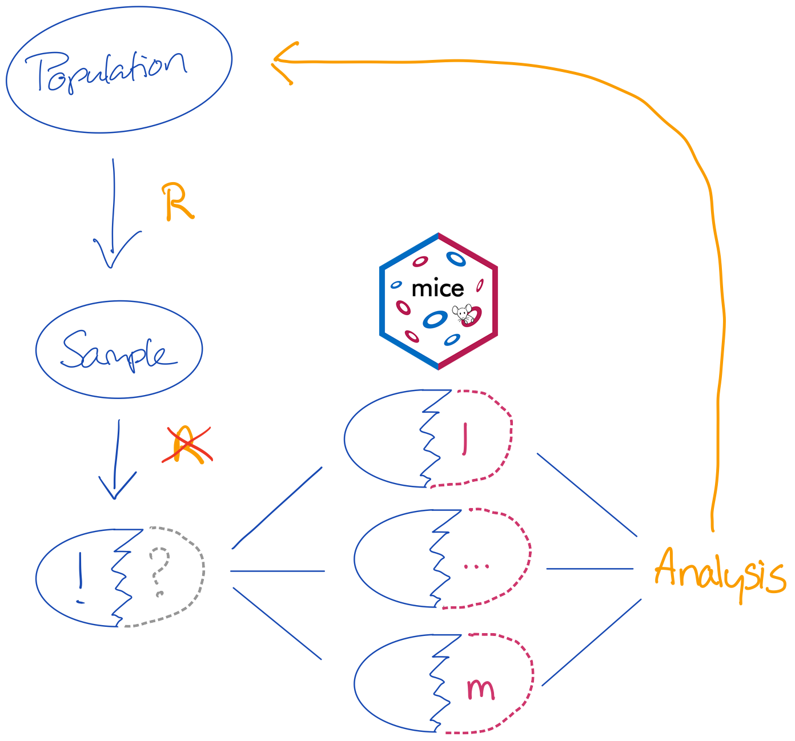
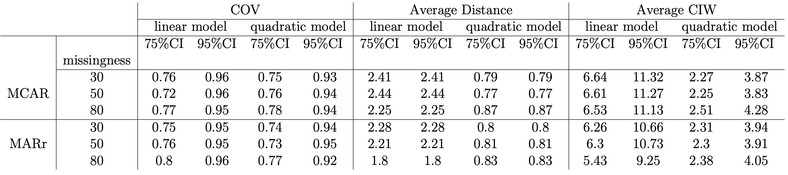

I owe a debt of gratitude to many people as the thoughts and code in these slides are the process of years-long development cycles and discussions with my team, friends, colleagues and peers. When someone has contributed to the content of the slides, I have credited their authorship.
Scientific references are in the footer. Opinions and figures are my own.
Packages used:
library(mice) # for imputationlibrary(miceadds) # additional mice and pooling routineslibrary(mitml) # multiple imputation in multilevel modelinglibrary(dplyr) # for data wranglinglibrary(lme4) # linear mixed effects modelslibrary(purrr) # functional programminglibrary(magrittr) # pipesset.seed(123)
At the start
Let’s start with the core:
Statistical inference is the process of drawing conclusions about truths from data
Truths are boring, but they are convenient.
however, for most problems truths require a lot of calculations, tallying or a complete census.
therefore, a proxy of the truth is in most cases sufficient
An example for such a proxy is a sample
Samples are widely used and have been for a long time \(^1\)
Let’s jump forward
We now have two problems:
we do not have the whole truth; but merely a sample of the truth
we do not even have the whole sample, but merely a sample of the sample of the truth.
If we would like to infer about the population, we would need to mimick the necessary variance mechanisms.
A straightforward and intuitive solution for analyzing incomplete data in such scenarios is multiple imputation (Rubin, 1987).
Multiple imputation with mice

There are two sources of uncertainty that we need to cover:
Uncertainty about the missing value: when we don’t know what the true observed value should be, we must create a distribution of values with proper variance (uncertainty).
Uncertainty about the sampling: nothing can guarantee that our sample is the one true sample. So it is reasonable to assume that parameter estimation on our sample could be biased.
More challenging if the sample does not randomly come from the population or if the feature set is too limited to solve for the substantive model of interest
Objective of this presentation
My aim is
to outline some strategies for imputing values “that could have been”
to demonstrate that these strategies can also be used to identify procedures “that could make sense”.
In this presentation we will commit a cardinal sin: we overimpute the observed values. –> But it serves a purpose, so don’t be alarmed yet.
What is not the aim
For reasons of brevity I will not go into the details about mainstream methods to generate multiple imputations. Specifically:
We can either model the joint distribution of the data by means of joint modeling
Or, we can model each variable separately by means of fully conditional specification
Just take it from me that merging the two techniques is a powerful procedure as we combine the flexibility of FCS with the automatic compatibility and efficient parameterization of JM
Hybrids of JM and FCS
We can extend the defaults of mice and combine the flexibility of FCS with the appealing theoretical properties of JM
In order to do so, we need to partition the variables into blocks
For example, we might partition \(b\) blocks \(h = 1,\dots,b\) as follows
a single block with \(b=1\) would hold a joint model: \[\{Y_1, Y_2, Y_3, Y_4\}, X\]
a quadruppel block with \(b=4\) would be the mice algorithm \[\{Y_1\},\{Y_2\},\{Y_3\},\{Y_4\}, X\]
anything in between would be a hybrid between the joint model and the mice model. For example, \[\{Y_1, Y_2, Y_3\},\{Y_4\}, X\]
Why the need for hybrid models?
Just some examples where a hybrid imputation procedure would be useful:
Imputing squares/nonlinear effects: In the model \(y=\alpha + \beta_1X+\beta_2X^2 + \epsilon\), \(X\) and \(X^2\) should be imputed jointly (Von Hippel, 2009, Seaman, Bartlett & White, 2012, Bartlett et al., 2015)
Compositional data: All the information about compositional data is encapsulated in the ratios between the components:
The scientific interest is to create a model for predicting the outcome lpo from the level-1 predictor iqv and the measured level-2 predictor den (which takes values 1-4). For pupil \(i\) in school \(c\) in composition notation:
\[lpo_{ic} = \beta_0 + \beta_1\mathrm{iqv}_{ic} + \beta_2\mathrm{den}_c + \upsilon_{0c}+ \epsilon_{ic}\] where \(\epsilon_{ic} \sim \mathcal{N}(0, \sigma_\epsilon^2)\) and \(\upsilon_{0c} = \mathcal{N}(0, \sigma_\upsilon^2)\)
fit <-with(imp.fcs, lmer(lpo ~1+ (1| sch), REML =FALSE))testEstimates(as.mitml.result(fit), extra.pars =TRUE)
Call:
testEstimates(model = as.mitml.result(fit), extra.pars = TRUE)
Final parameter estimates and inferences obtained from 10 imputed data sets.
Estimate Std.Error t.value df P(>|t|) RIV FMI
(Intercept) 40.827 0.325 125.721 51673.001 0.000 0.013 0.013
Estimate
Intercept~~Intercept|sch 18.567
Residual~~Residual 64.066
ICC|sch 0.225
Unadjusted hypothesis test as appropriate in larger samples.
fit <-with(imp.hybrid, lmer(lpo ~1+ (1| sch), REML =FALSE))testEstimates(as.mitml.result(fit), extra.pars =TRUE)
Call:
testEstimates(model = as.mitml.result(fit), extra.pars = TRUE)
Final parameter estimates and inferences obtained from 10 imputed data sets.
Estimate Std.Error t.value df P(>|t|) RIV FMI
(Intercept) 40.854 0.327 124.992 21918.293 0.000 0.021 0.020
Estimate
Intercept~~Intercept|sch 18.705
Residual~~Residual 63.923
ICC|sch 0.226
Unadjusted hypothesis test as appropriate in larger samples.
Imputation vs data synthesis
Instead of drawing only imputations from the posterior predictive distribution, we might as well overimpute the observed data.
How to draw any synthetic constellation with mice
complete <-na.omit(data[, c(4:1)]) # complete casesnewdata <- complete; newdata[!is.na(complete)] <-NA# empty set of the same sizepred <-make.predictorMatrix(complete) # predictor matrixmice(rbind(complete, newdata),m =5, method ="cart",maxit =1,predictorMatrix =+lower.tri(pred), # use only the lower triangularignore =rep(c(FALSE, TRUE), each =nrow(complete)), # only use dataprint =FALSE) |>complete("all") |># list of synthetic setsmap(~.x |>subset(rep(c(F, T), rep(nrow(complete), 2))) # take only the synthetic values%$%lm(lpo ~ iqv)) |># for every synthetic set do..pool(rule ="reiter2003") |># pool the analyses cf. Reiter (2003)summary()
# Complete case analysislm(lpo ~ iqv, complete) |>summary() |>extract2("coefficients")
Estimate Std. Error t value Pr(>|t|)
(Intercept) 41.234107 0.1163191 354.49117 0
iqv 2.652626 0.0567412 46.74956 0
What should synthetic data be?
Nowadays many synthetic data cowboys claim that they can generate synthetic data that looks like the real data that served as input.
Many of these synthetic data packages only focus on marginal or conditional distributions. By generating multiple synthetic sets with mice we can also properly consider the inferential properties of the synthetic data.
In general, Volker & Vink (2021) argue that any synthetic data generation procedure should
Preserve marginal distributions
Preserve conditional distribution
Yield valid inference
Yield synthetic data that are indistinguishable from the real data
Synthesis a diagnostic tool
Let’s assume that we have an incomplete data set and that we can impute the incomplete values under multiple models
Challenge Imputing the data set under one model may yield different results than imputing the data set under another model.
Problem We may have no idea about validity of either model’s results: we would need either the true observed values or the estimand before we can judge the performance and validity of the imputation model.
We do have a constant in our problem, though: the observed values
Measures

We see that we can identify the better fitting quadratic model based on the Neyman-trifecta:
confidence validity
lower average distance
smaller confidence intervals
In mice we can use the where argument to specify which cells we would like to be (over)imputed.
Posterior predictive checks
We can overimpute the observed values and evaluate how well the models fit on the observed values.
The assumption would then be that any good imputation model would properly cover the observed data (i.e. would fit to the observed data).
If we overimpute the observations multiple times we can calculate bias, intervals and coverage.
The model that would be unbiased, properly covered and have the smallest interval width would then be the most efficient model.
The model to the left clearly does not fit well to the observations.
Better fit
We can overimpute the observed values and evaluate how well the models fit on the observed values.
The assumption would then be that any good imputation model would properly cover the observed data (i.e. would fit to the observed data).
If we overimpute the observations multiple times we can calculate bias, intervals and coverage.
The model that would be unbiased, properly covered and have the smallest interval width would then be the most efficient model.
The model to the left fits quite well to the observations.
Can we infer truth?
Summary
Hybrid imputation with blocks is a straightforward extension to the mice algorithm.
Adding blocks allows for more flexibility in cases where multivariate imputation would lead to to better inference
Using blocks allows the modeler to remain closer to the observed data
mice allows for the generation of synthetic data.
Volker & Vink (2021) demonstrated that multiple synthetic sets generated with mice:
yield valid inferences whilst preserving marginal and conditional distributions \(^1\).
can not be distinguished from the true data
mice can both impute and synthesize simultaneously, although the pooling rules for such a scenario remain focus of future work
Using mice to synthesize the observed cases only effectively results in overimputation of observed data
the imputations are draws from the posterior predictive distribution.
this allows for posterior predictive checks, diagnostic evaluations and comparisons between imputation models.
![]()